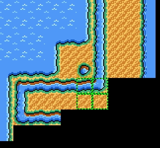
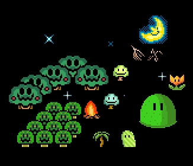
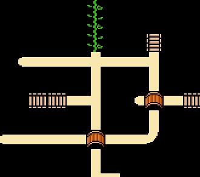
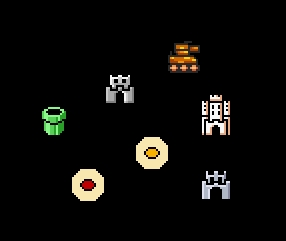
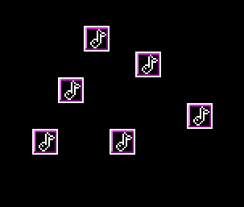

Items - main content and part of any world maps. There are a construction material, sceneries, level entrances, paths, etc.
Avalilable item types:
Tiles - the main design unit which using for creating of design of the level map. Tiles isn't communicating with other items.

Sceneries - the secondary design unit. Sceneries can be hidden when did opened a path which placed over them.

Paths - allow to player move between level points and map locations. Usually paths are hidden and appearing when player pass the level which placed nearly to them.

Level entrances - The special units, which allowing to enter into defined level or teleport player to other map coorditates. Levels can have multiple entrances, but can have difference warp points inside a level. Also level point using as game start point. If point is not defined, player will start from 0x0 coordinates.

Music Boxes - The special units which switching playing music when player character stand on them.

Copyright © 2014-2015 Platformer Game Engine by Wohlstand project. All rights reserved.